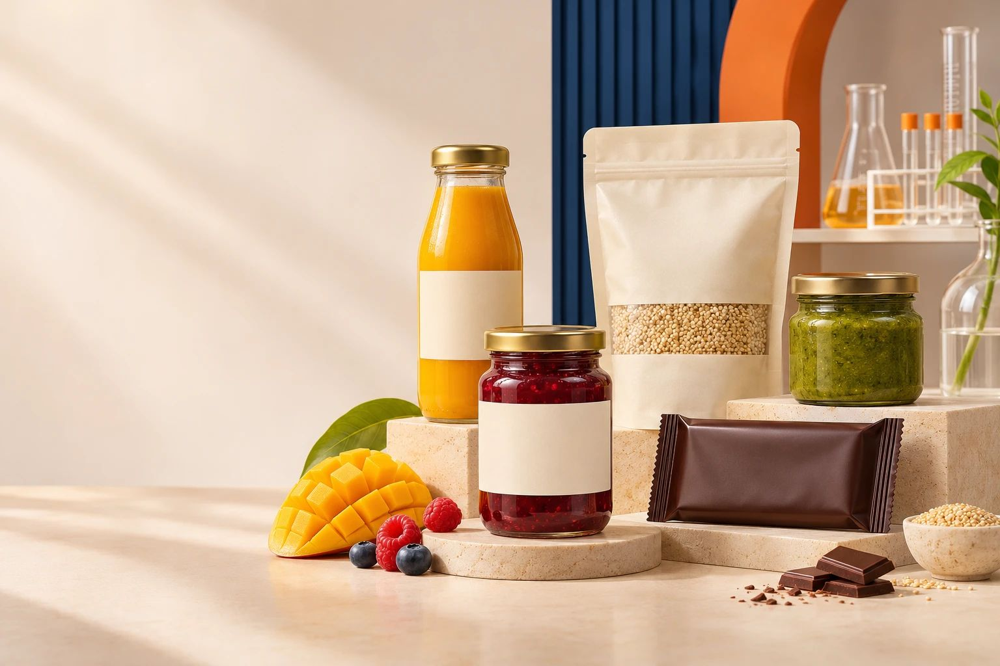
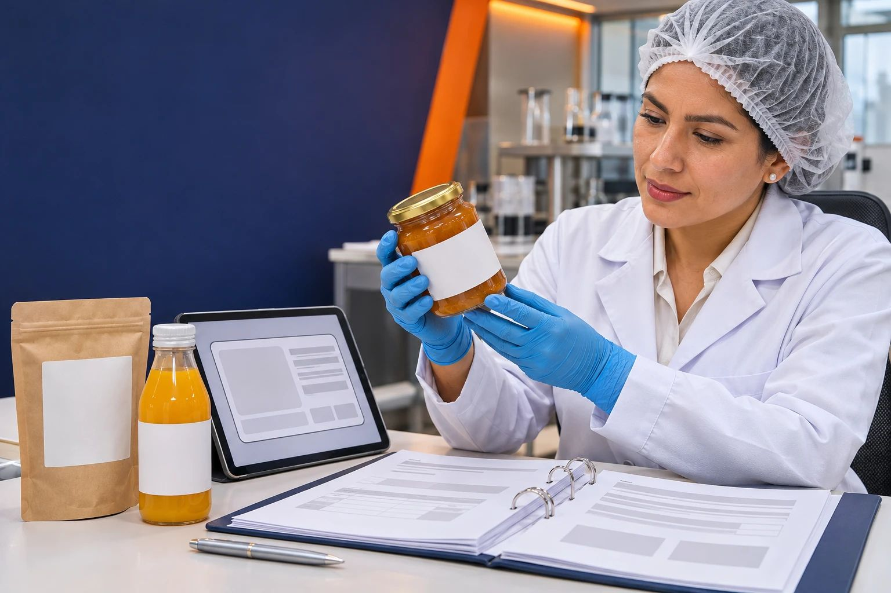
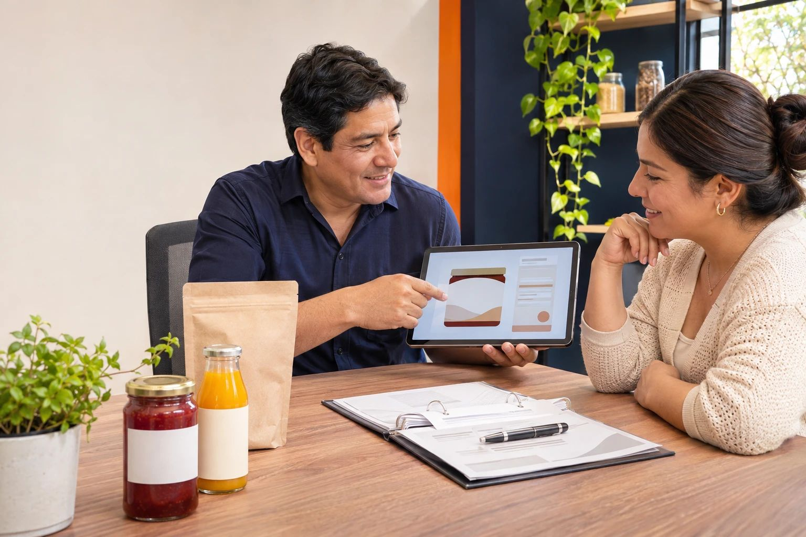

Inicio / Guías / Registro sanitario DIGESA de alimentos
Guía técnicaRegistro sanitario DIGESA de alimentos: requisitos, costo y pasos
Quién debe tramitarlo, qué documentos pide la autoridad, cómo se presenta en la VUCE, cuánto dura y cómo se renueva. Cada punto indica el artículo del DS 007-98-SA o la página oficial de donde sale.

El registro es del producto, no de la empresa
Solo están sujetos a registro sanitario los alimentos y bebidas industrializados que se comercializan en el país (Art. 102). La DIGESA, del Ministerio de Salud, es el órgano que inscribe, reinscribe, modifica, suspende y cancela el registro (Art. 101).
El registro se otorga por producto o grupo de productos y fabricante (Art. 104) y faculta fabricar o importar y comercializar. Quien lo obtiene es responsable de la calidad sanitaria e inocuidad del producto que libera.
Un grupo reúne productos del mismo fabricante con la misma composición cualitativa de ingredientes básicos y los mismos aditivos. Cada expediente admite solo un producto o un grupo.
Qué no pasa por este trámite
- Alimentos en estado natural, estén o no envasados: granos, frutas, hortalizas, carnes y huevos, entre otros (Art. 103).
- Muestras sin valor comercial y productos donados por entidades extranjeras con fines benéficos (Art. 103).
- Productos de procesamiento primario: según DIGESA, su autoridad es SENASA. Los productos de origen acuícola y los dietéticos o con propiedades en salud también tienen otra autoridad competente.
Si dudas de dónde cae tu producto, esa es la primera consulta que conviene resolver, porque define a qué ventanilla vas.
Qué debe contener el expediente
Se presenta como solicitud con carácter de declaración jurada. Esta es la lista que conviene tener completa antes de entrar a la VUCE.
Datos de la empresa
Razón social, domicilio y RUC de quien solicita el registro.
Nombre y marca
El nombre debe reflejar la verdadera naturaleza del producto. La marca se declara junto con él.
Establecimiento de fabricación
Nombre, dirección y país del lugar donde se elabora el producto.
Fisicoquímico y microbiológico
Del producto terminado, emitido por el laboratorio de la fábrica o por un laboratorio acreditado (INACAL u organismo extranjero con reconocimiento ILAC o IAAC). Debe estar vigente y citar los métodos de ensayo.
Ingredientes y aditivos
Lista de ingredientes y cantidad de cada aditivo, con su nombre genérico y su código numérico internacional (SIN).
Vida útil y almacenamiento
Condiciones de conservación, período de vida útil en condiciones normales y sistema de identificación del lote.
Tipo, material y presentaciones
Datos del envase que usará el producto.
Declaración de cumplimiento
Declaración jurada de que la etiqueta cumple el contenido que exige el Art. 117 del DS 007-98-SA.
Certificado de libre comercialización
Emitido por la autoridad del país del fabricante o exportador. Los documentos extranjeros no pueden tener más de un año desde su emisión y llevan traducción al español (Art. 115).
Para alimentos de regímenes especiales, como los destinados a lactantes, se añade un análisis bromatológico de laboratorio acreditado con sus propiedades nutricionales.

Que el papel diga lo mismo que el producto
La mayoría de las observaciones nacen de datos que no coinciden. Los análisis deben corresponder a tu empresa, a la dirección del establecimiento de fabricación y al nombre del producto declarado.
Lo mismo vale para la etiqueta: el rotulado debe cumplir el contenido que pide el Art. 117 y el nombre debe reflejar la verdadera naturaleza del producto. Revisarlo antes de imprimir evita rehacer envases.
Cómo se tramita
El trámite es virtual, a través de la Ventanilla Única de Comercio Exterior (VUCE).
Define producto o grupo
Decide qué se registra en cada expediente. Fórmulas con distintos ingredientes o aditivos son grupos distintos y van por separado.
Manda a analizar el producto
Pide el fisicoquímico y el microbiológico del producto terminado, con datos que coincidan con tu empresa, la dirección de fabricación y el nombre del producto.
Revisa tu etiqueta
Verifica el rotulado contra el Art. 117 antes de imprimir. Los aditivos deben cumplir el Art. 63 y declararse con su código SIN.
Presenta la SUCE en la VUCE
La Solicitud Única de Comercio Exterior es la declaración jurada. Se presenta en línea; hoy el trámite no tiene derecho de trámite (ver la sección de costo).
Espera el pronunciamiento
DIGESA indica un plazo máximo de 7 días hábiles para entregar el documento; en reinscripciones ha informado retrasos. Si hay observaciones, tienes 30 días calendario para subsanarlas o el registro puede cancelarse (Art. 111).
Imprime con tu número
El código tiene la forma RSA 000N para producto nacional y RSA 000E para importado (Art. 106). El número en la etiqueta debe corresponder al producto registrado.
Lo que pagas hoy, en dos partes
- Derecho de trámite: desde el 22 de julio de 2026 rige el nuevo TUPA del Ministerio de Salud (DS 011-2026-SA). Según el Comunicado 05-2026 de DIGESA, del 3 de agosto de 2026, los registros sanitarios se siguen atendiendo sin costo para el administrado. Si la VUCE genera un cobro que debe ser gratuito, DIGESA garantiza la devolución (Comunicado 06-2026, con formato y pasos para pedirla).
- Análisis de laboratorio: dependen del producto y del laboratorio. Pide cotizaciones a laboratorios acreditados antes de decidir.
Es la regla vigente a la fecha de esta guía. Confirma en la VUCE o en los comunicados de DIGESA antes de presentar, porque puede cambiar. A esto se suma, si hace falta, el costo de ajustar fórmula o etiqueta para que el expediente pase sin observaciones.
Vigencia, renovación y cambios
Plazos que no puedes perder
| Situación | Qué dice el reglamento |
|---|---|
| Vigencia | 5 años desde el otorgamiento (Art. 108) |
| Reinscripción | Entre 60 y 7 días hábiles antes del vencimiento (Art. 108) |
| Si no renuevas a tiempo | El registro caduca; la solicitud se trata como registro nuevo (Art. 108) |
| Producto vencido en el mercado | El titular lo retira en 90 días calendario; luego se ordena su decomiso (Art. 108) |
| Cambio de receta, envase o datos | Aviso por escrito a DIGESA, 7 días hábiles antes de hacerlo (Art. 109) |
Cuándo puede caer un registro
| Causa | Efecto |
|---|---|
| Adulteración o falsedad en lo declarado | Cancelación (Art. 111) |
| Observaciones no subsanadas en 30 días calendario | Cancelación (Art. 111) |
| Aditivos prohibidos o sobre el límite, o envases de uso prohibido | Cancelación (Art. 111 y 124) |
| Información internacional que declare dañino un aditivo o material de envase | Suspensión hasta corregir (Art. 110) |
| Fabricar, almacenar o vender sin registro | Infracción: multa de 0,5 a 100 UIT, cierre o clausura (Art. 122 y 123) |
La escala de multas la define una resolución del Ministro de Salud.
Errores que frenan el expediente
Mezclar fórmulas
Meter en un solo expediente productos con distintos ingredientes o aditivos, cuando cada grupo va por separado (Art. 104).
Análisis que no coinciden
Informes con otra razón social, otra dirección de fabricación o un nombre de producto distinto al declarado.
Aditivos mal declarados
Sin código SIN ni cantidad, o por encima de lo permitido (Art. 63 y 111).
Etiqueta improvisada
Rotulado que no cumple el Art. 117, descubierto recién cuando ya se imprimió.
Dejar vencer el registro
No pedir la reinscripción dentro de la ventana de 60 a 7 días hábiles y tener que empezar de cero.
Cambiar sin avisar
Modificar la receta o el envase sin comunicarlo a DIGESA 7 días hábiles antes (Art. 109 y 122).
Tu planta también tiene que estar lista
El registro habilita el producto. La calidad sanitaria se verifica después de la inscripción (Art. 107), y la planta puede recibir inspecciones sin aviso.
Qué pide hoy DIGESA a la planta
Según el establecimiento, se exige la Validación Técnica Oficial del Plan HACCP o el Certificado de Principios Generales de Higiene. Lee la guía y la guía del Plan HACCP.
Diseño de planta en 3D
Revisamos la distribución contra los requisitos del reglamento antes de construir o adecuar. Ver el servicio.
Regulación y cumplimiento
Te acompañamos desde el expediente hasta los programas y registros que la autoridad revisa. Ver el servicio.
Como la inspección puede llegar sin aviso, los registros deben estar al día todos los días. Por eso también digitalizamos los registros BPM y HACCP.

Revisamos tu expediente antes de presentarlo
Miramos contigo la fórmula, los análisis y la etiqueta, y te decimos qué falta o qué no coincide antes de entrar a la VUCE.
El diagnóstico inicial no tiene costo. Cuéntanos qué producto quieres registrar y empezamos por ahí.
Lo que más nos preguntan
¿Qué alimentos necesitan registro sanitario DIGESA?
Los alimentos y bebidas industrializados que se comercializan en el país (DS 007-98-SA, Art. 102). Se consideran industrializados los productos finales de consumo humano obtenidos por transformación física, química o biológica de insumos y que contienen aditivos alimentarios.
¿Qué alimentos no necesitan registro sanitario?
El Art. 103 del DS 007-98-SA excluye los alimentos y bebidas en estado natural, estén o no envasados (granos, frutas, hortalizas, carnes y huevos, entre otros), las muestras sin valor comercial y los productos donados por entidades extranjeras con fines benéficos.
¿Se pide un registro por producto o por empresa?
Por producto o grupo de productos y fabricante (Art. 104). Un grupo reúne productos del mismo fabricante con la misma composición cualitativa de ingredientes básicos y los mismos aditivos. Por cada expediente solo ingresa un producto o un grupo.
¿Cuánto tarda y cuánto cuesta el registro sanitario?
Desde el 22 de julio de 2026, según el Comunicado 05-2026 de DIGESA, los registros sanitarios se atienden sin costo para el administrado, y si la VUCE genera un cobro, DIGESA garantiza la devolución. El plazo máximo que indica DIGESA es de 7 días hábiles, aunque informó retrasos en las reinscripciones por problemas de transmisión de datos entre la VUCE y DIGESA. Aparte pagas los análisis de laboratorio, que dependen del producto.
¿Cuánto dura el registro sanitario y cómo se renueva?
Dura cinco años desde su otorgamiento (Art. 108). Se renueva con una solicitud de reinscripción presentada entre 60 y 7 días hábiles antes del vencimiento. Si no la pides a tiempo, el registro caduca y el trámite se tramita como uno nuevo.
¿Tengo que avisar si cambio la receta o el envase?
Sí. El Art. 109 pide comunicar por escrito a DIGESA cualquier cambio en los datos y condiciones del registro, por lo menos 7 días hábiles antes de hacerlo, con el sustento correspondiente.
¿Con el registro sanitario ya terminé con DIGESA?
No. El Art. 107 indica que la calidad sanitaria del producto se verifica después de la inscripción. Además, la planta puede recibir inspecciones inopinadas, y según el establecimiento se exige la Validación Técnica Oficial del Plan HACCP o el Certificado de Principios Generales de Higiene.
Fuentes, consultadas el 5 de noviembre de 2026: DS 007-98-SA, Reglamento sobre Vigilancia y Control Sanitario de Alimentos y Bebidas (Arts. 101 a 115, 122 a 124); DIGESA, procedimiento Registro Sanitario de Alimentos de Consumo Humano; DIGESA, infografía de inscripción y reinscripción; Comunicado 05-2026 de DIGESA, 06-2026 y 10-2026. Las normas han tenido modificaciones posteriores y los requisitos del TUPA cambian: verifica siempre el texto y el procedimiento vigentes en la VUCE. Autor: Ing. Willam Pari Hilasaca, CIP N.° 149723 · Actualizado: noviembre de 2026.
¿Vas a registrar un producto o a renovarlo?
Revisamos tu fórmula, tus análisis y tu etiqueta antes de entrar a la VUCE, para que el expediente no vuelva con observaciones. El diagnóstico inicial no tiene costo.
Agenda tu diagnóstico gratuito →